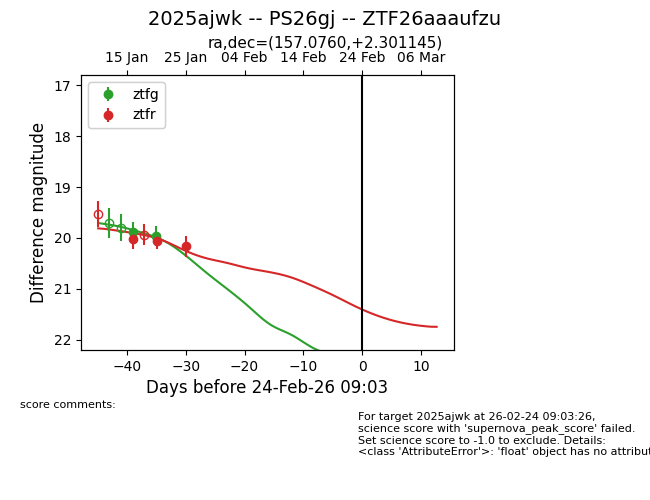
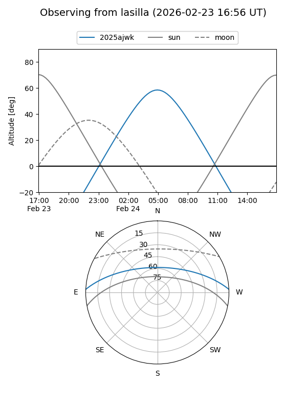
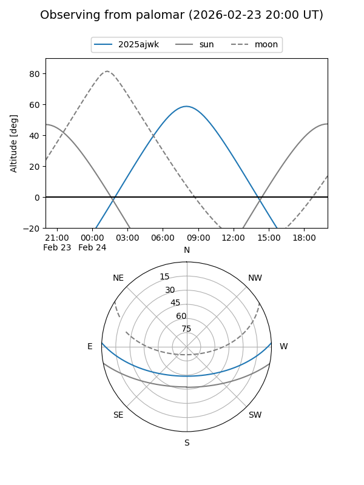
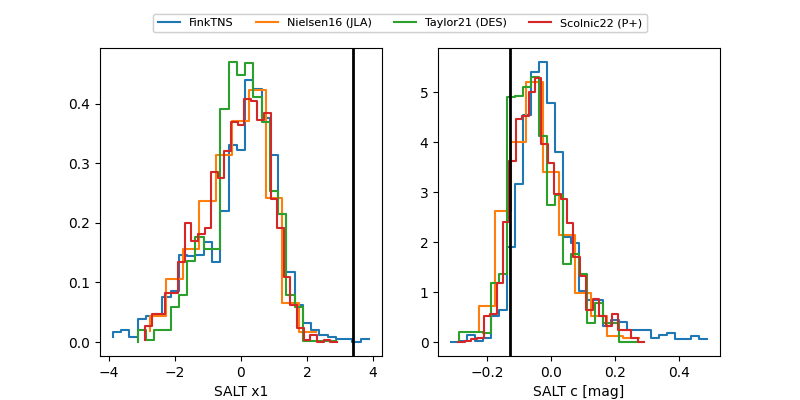

2025ajwk
Target 2025ajwk at 2026-01-27 18:31
Aliases and brokers:
FINK: link
Lasair: link
ALeRCE: link
TNS: link
YSE: link
alt names
ZTF26aaaufzu (ztf,fink_ztf)
2025ajwk (tns,yse)
PS26gj (panstarrs)
Coordinates:
equatorial (ra, dec) = 157.0760,+2.30114
equatorial (HMS+DMS) = 10:28:18.23,+02:18:04.12
galactic (l, b) = (242.6781,+47.70699)
Flags:
Photometry:
last ztfg=19.96, ztfr=20.16
2 ztfg, 3 ztfr detections
Lightcurve

Visibility


Additional plots
